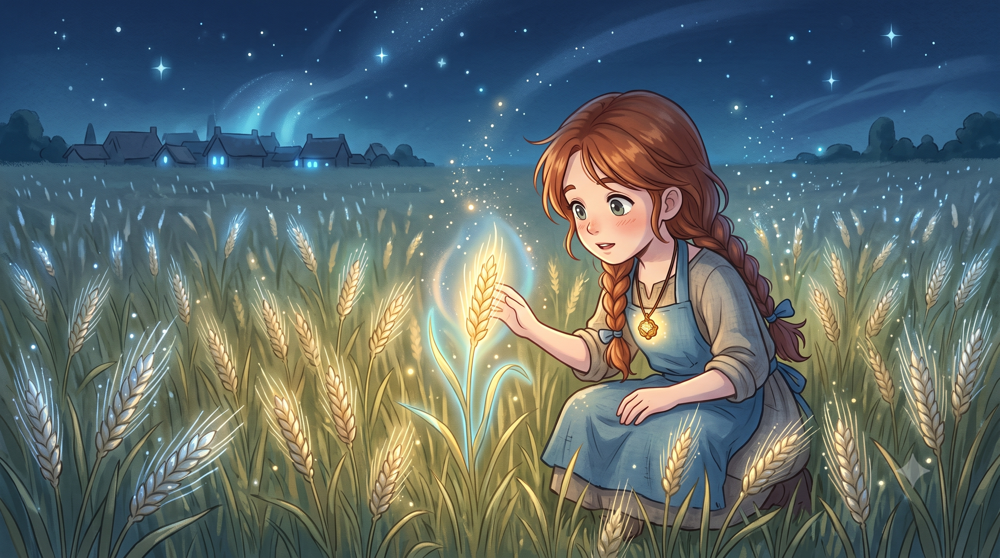
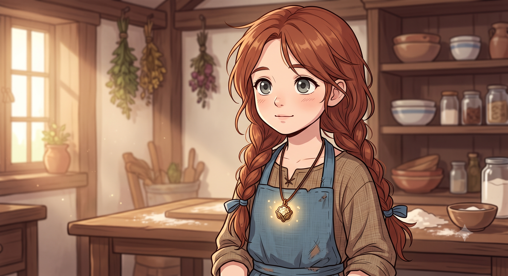
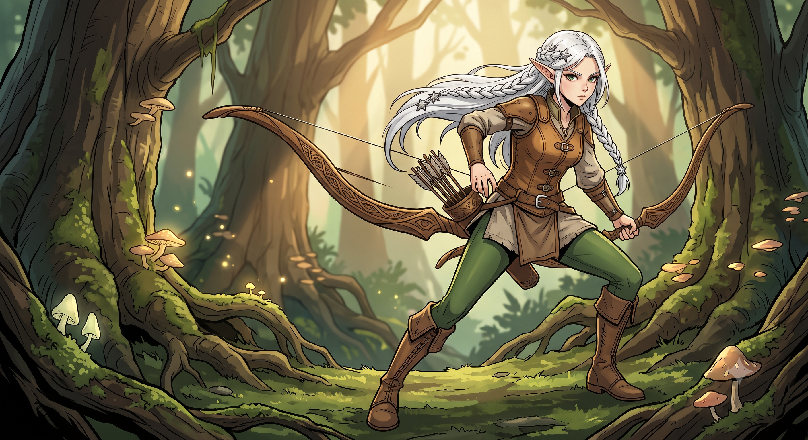
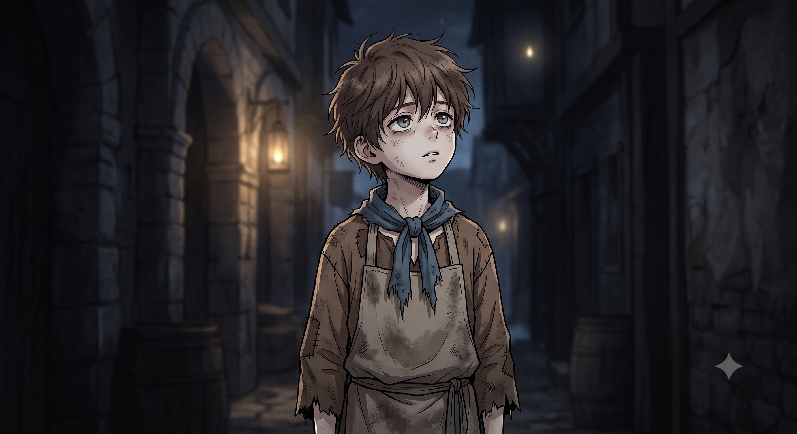
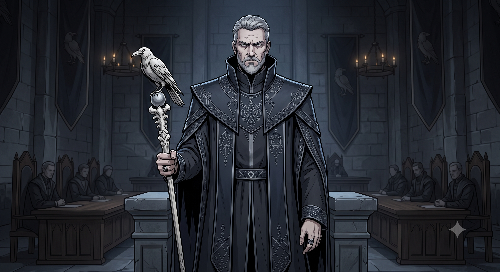

Chapitre 1 : Éclosion dans le Champ de Blé
Une histoire de fantasy culinaire

Le ciel de la nuit était parsemé d'étoiles immobiles, mais en bas, la terre dansçait.
Luna Thornwick cligna des yeux, couchée sur le dos. Ses doigts grattèrent le sol, accumulant de la terre tiède et humide sous ses petits ongles. L'air était frais, presque piquant, mais une chaleur douce battait contre sa poitrine. Poum. Poum.
Elle baissa les yeux. La grosse graine de chou-fleur en bronze, accrochée à son cou par un lacet de cuir, pulsait d'une lumière dorée, exactement au même rythme que son cœur.
Où était le canapé du salon ? Où était Grand-mère Marinette ?
Luna se leva en trébuchant à moitié. Autour d'elle s' étendait un champ de blé infini, mais les épis brillaient doucement dans le noir, comme des centaines de petites lucioles fatiguées. Luna fronça les sourcils. En plissant les yeux, elle remarqua que les tiges avaient une étrange aura bleutée.
Elle tendit sa petite main et frôla un épi. Un frisson lui parcourlit le bras, suivi d'une sensation de gorge sèche et râpeuse. Ce n'était pas des mots, mais une évidence pure.
L'épi de blé se courba légèrement vers elle, frottant ses grains contre sa paume, comme un chat qui réclame des caresses. Luna pouffa de rire.

Crac.
Le rire de Luna s'étrangla net. Derrière elle, une silhouette élancée venait de bondir d'un arbre mort pour atterrir sans un bruit. C'était une grande fille, vêtue de cuir usé, avec des cheveux blancs tressés et des oreilles pointues qui dépassaient. Un arc en bois sombre était bandé, la flèche pointée droit sur le torse de Luna.
Luna renifla, frottant ses yeux pleins de sommeil. La flèche lui faisait un peu peur, mais la dame avait l'air surtout très fatiguée. Son aura à elle tremblotait d'un bleu-gris anxieux.
Sylvie cligna des yeux, totalement déstabilisée. Elle abaissa lentement son arc, l'esprit en ébullition face à l'absurdité de la situation. Une enfant ? Ici ?
C'est alors que la lune éclaira la main droite de la petite fille. Sylvie retint son souffle. Une cicatrice en forme de spirale parfaite. La marque des Lignées.

Le village de Brièves-Îles sentait le sel et la pierre froide. En se faufilant dans les ruelles sombres derrière Sylvie, Luna remarqua immédiatement ce qui clochait. L'air était vide. Il n'y avait aucune cheminée sur les toits, aucune odeur de bois brûlé, de pain chaud ou de soupe. Les maisons ressemblaient à des boîtes mortes.
À travers la fenêtre d'une bicoque, Luna vit un garçon à peine plus vieux qu'elle. Il s'appelait Kael. Il était si pâle qu'il semblait transparent, et il tremblait de tout son corps sous une fine couverture. Près de lui, sa mère déboucha une fiole géométrique parfaite et lui fit boire un liquide rougeoyant et stérile.
Luna regarda Kael grelotter. Son petit visage se ferma, déterminé.
Elles se réfugièrent dans une vieille grange abandonnée aux abords du village. Sylvie, toujours méfiante, utilisa une petite pierre à feu pour chauffer une large lauze (une pierre plate) trouvée dans les gravats.
Luna farfouilla dans les réserves oubliées sous la paille. Sa synesthésie la guida. Elle vit une faible aura dorée émaner d'un vieux sac en toile, et des petites pointes vertes s'échapper de bouquets secs accrochés aux poutres.
Elle étala de vieux grains de blé sauvage sur la pierre brûlante. Ensuite, elle écrasa dans ses petites mains des feuilles de menthe sauvage et de petites graines rondes et piquantes qui lui rappelaient les marinades parfumées que sa grand-mère préparait le dimanche.
La graine en bronze contre son cœur commença à pulser d'une chaleur lente, douce et réconfortante. Luna ferma les yeux et pensa très fort à la sensation d'une grosse couette bien chaude en hiver.
Les grains de blé crépitèrent sur la pierre. Les huies essentielles de la menthe et des épices se libérèrent brusquamment. Un ruban de fumée dorée s'éleva, traversant la grange. L'odeur était magnétique, profonde, presque charnelle. C'était l'odeur du foyer.
L'odeur avait voyagé. La porte de la grange grince. Kael se tenait là, serrant sa couverture, le nez en l'air, attiré comme un somnambule par le parfum du blé grillé.
Kael hésita. Le concept même de mettre cette chose dans sa bouche lui était étranger. Mais la chaleur qui émanait du bol fit fondre sa peur. Il prit une petite cuillère et avala.
L'effet fut instantané. La Règle de la Commensalité s'activa. La magie du plat explosa doucement dans Kael. Ses joues prirent une teinte rosée. Ses épaules se détendirent. La peur qu'il portait dans son aura grise fut pulvérisée par l'Intention de Luna, remplacée par un jaune chaud et rayonnant.
Il ouvrit de grands yeux émerveillés.
La voix résonna directement dans le crâne de Kael. Il sursauté, recrachant presque sa bouchée, et pointa un doigt tremblant vers Luna.

Soudain, les fioles de mana accrochées à la ceinture de Sylvie se mirent à vibrer frénétiquement. La magie synthétique réagissait à la magie pure de la cuisine.
Le Maire du village et trois Sentinelles de la Guilde, drapés dans de longs manteaux stricts, venaient d'entourer la grange. Leurs bâtons de cristal noir brillaient dangereusement.
Luna voulut se lever, mais ses genoux se dérobèrent. Sa vision se troubla et un bâillement monumental lui décrocha la mâchoire. Cuisiner avec de la magie avait drainé toute son énergie de petite fille.
À l'extérieur, le Maire leva son bâton. Mais la graine de bronze de Luna, sentant la détresse de son hôte endormie, envoya une impulsion furieuse dans le sol. Les vieilles racines sous la grange éclatèrent le plancher, formant un mur de ronces épaisses et lumineuses entre les fuyards et la Guilde. Les racines creusèrent un tunnel végétal qui s'enfonçait vers l'est, au-delà des champs.